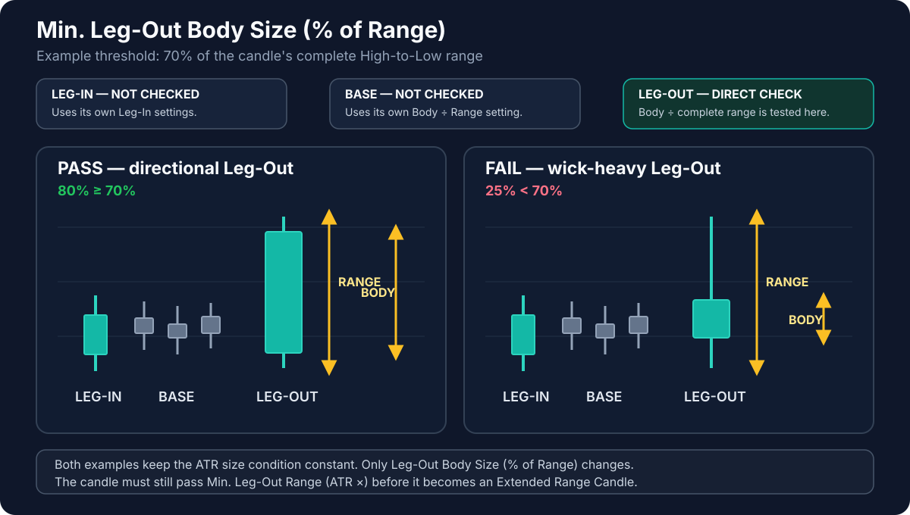

Min. Leg-Out Body Size (% of Range)
Default: 70%
Applies to: LEG-OUT
LEG-OUT — direct effect: this setting helps decide whether the departure candle is a valid Extended Range Candle.
BASE — no effect: Base candles use their own body/range limit and the fixed Base-range-versus-Leg-Out-range rule.
LEG-IN — no effect: the Leg-In is qualified by its own body/range setting.
Terms used on this page
- ERC — Extended Range Candle — a decisive expansion candle with a meaningful body and enough size compared with recent market movement.
- ATR — Average True Range — a measure of how much price has typically moved over recent candles.
- Body — the solid part between the open and close.
- Wicks — the thin parts above and below the body.
- Leg-Out — the departure candle that confirms price has left the base.
- Base — the short pause before the departure.
What this setting controls
It controls how much of a potential Leg-Out candle must be made up of body rather than wicks. At the default value of 70, the body must cover at least 70% of the candle's complete high-to-low range.
A candle with a large body and relatively small wicks shows clearer directional commitment. A candle dominated by wicks shows more hesitation.
If you lower the value
- More candles can be treated as expansion candles.
- More potential zones may appear.
- Wick-heavy and less decisive departures become easier to accept.
If you raise the value
- Fewer candles qualify as expansion candles.
- Departures must look cleaner and more directional.
- The indicator may ignore valid but less visually perfect moves.
Important interaction
This setting evaluates the shape of the candle, not whether the candle is large for current market conditions. Min. Leg-Out Range (ATR ×) performs the separate size check. Both must be satisfied before the candle is treated as a valid expansion candle.
Visual for this setting

Only the highlighted Leg-Out is checked by this parameter. Base and Leg-In candles are not tested by it.